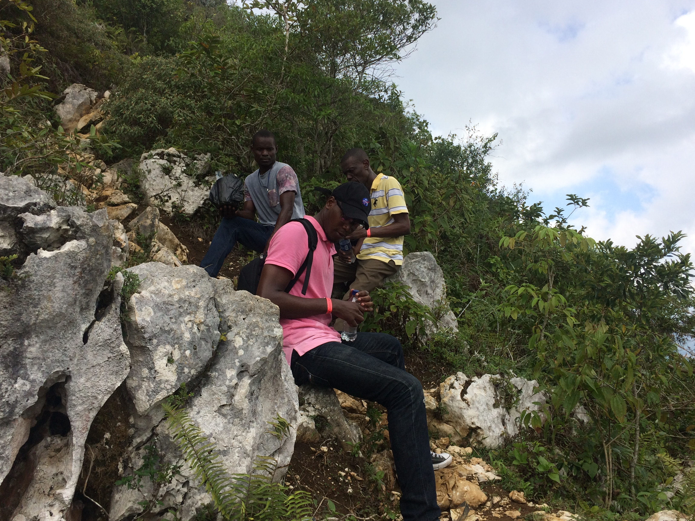
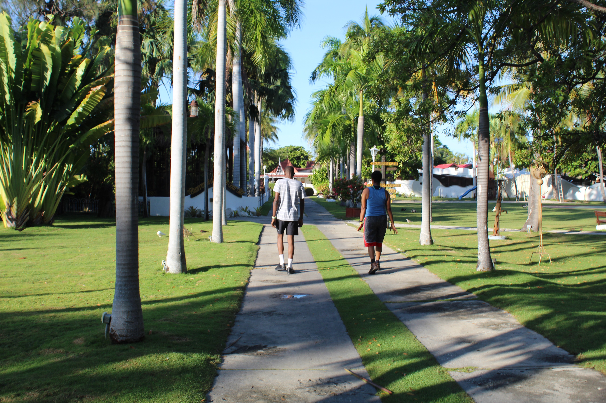
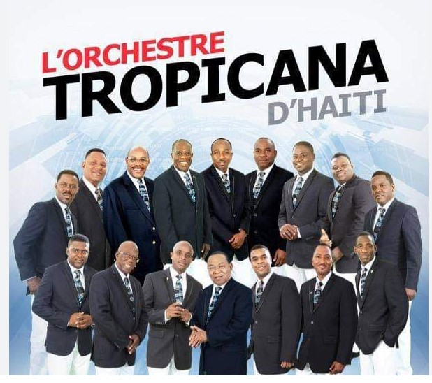
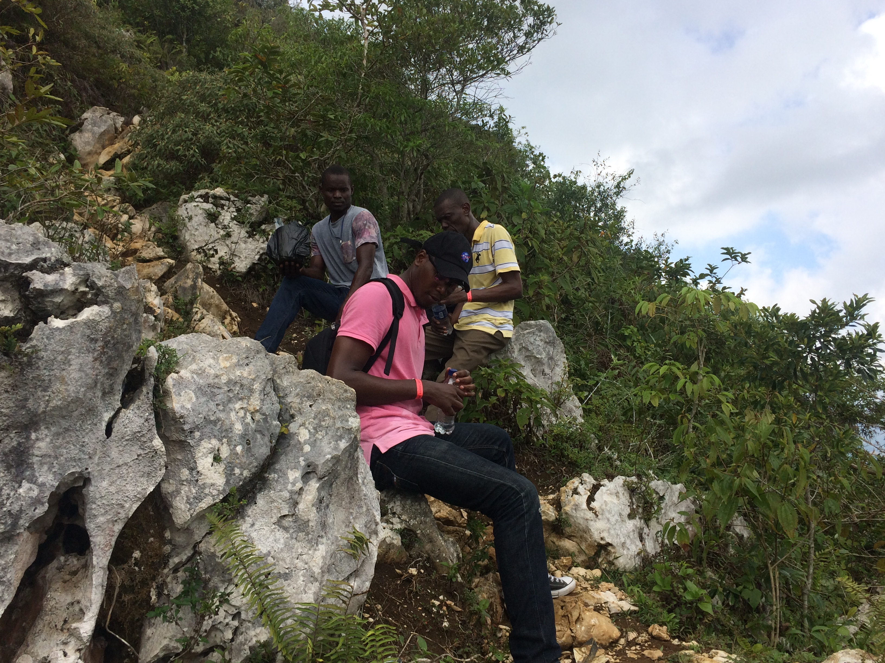
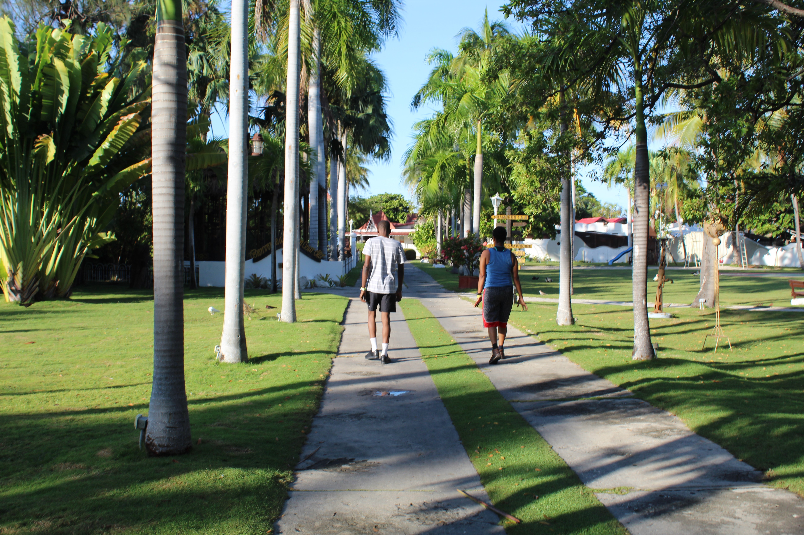
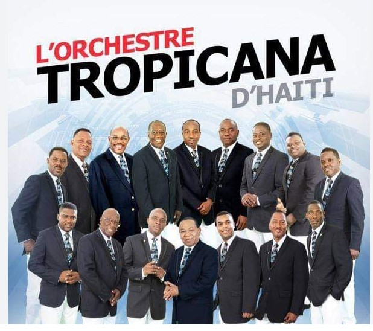

Passions and Interests
As a devoted fan of Tropicana, I find joy in their music, which inspires my creativity. I also enjoy hiking at Citadelle Laferière, where the breathtaking views remind me of our nation's resilience...
  As a devoted fan of Tropicana, I find joy in their music, which inspires my creativity. I also enjoy hiking at Citadelle Laferière, where the breathtaking views remind me of our nation's resilience...
  